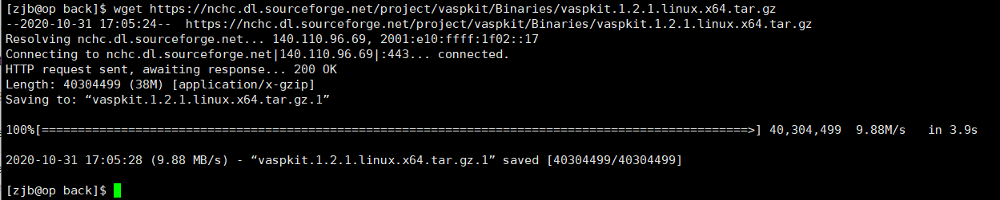

VASPKIT 的配置 ¶
推荐视频 VASPKIT 功能介绍，解放你的双手 ：
我们预计将
VASPKIT
安装在
~/app/
下，在用户目录下新建一个
app
文件夹并进入：
下载 ¶
你可以将其下载到自己的电脑上后再上传到服务器，也可以直接在服务器上下载。以下两种下载方式二选一即可。
方式一（Recommend） ¶
# VASPKIT软件的包
$ wget https://nchc.dl.sourceforge.net/project/vaspkit/Binaries/vaspkit.1.2.1.linux.x64.tar.gz
# 赝势文件的包 自行下载上传，链接二选一，文件是同一个，包含 PBE 和 PWA 两种赝势，大陆网络推荐 gitee 。
# https://github.com/northword/dft-learning/blob/7b46bcb3e2464c4e6ef33415d3bbe491a0a8198f/app/pot.tgz
# https://gitee.com/northword/dft-learning/blob/gitbook/app/pot.tgz
下载成功即如图： 
方式二 ¶
官方下载地址： https://sourceforge.net/projects/vaspkit/files/Binaries/
下载后使用 FTP 上传到服务器。
解压缩 ¶
tar -xzvf vaspkit.1.2.1.linux.x64.tar.gz
tar -xzvf pot.tgz
rm vaspkit.1.2.1.linux.x64.tar.gz pot.tar vtstscripts.tar
# 注意如果用的链接不同，文件名可能不同，自行变通。善用按Tab补全。
tar
命令用法见
linux-command.md
配置 VASPKIT 程序的环境变量 ¶
首先配置 VASPKIT 软件的变量。将软件自带的环境变量模板文件复制到用户目录，并编辑
打开后如下：
# cp how_to_set_environment_variable ~/.vaspkit and modify the ~/.vaspkit file based on your settings!
VASP5 .TRUE. # .TRUE. or .FALSE.; Set .FALSE. if you are using vasp.4.x
LDA_PATH ~/POTCAR/LDA # Path of LDA potential.
PBE_PATH ~/POTCAR/PBE # Path of PBE potential.
GGA_PATH ~/POTCAR/GGA # Path of PW91 potential.
POTCAR_TYPE PBE # PBE, PW91 or LDA; Set PBE if you want to make PBE-POTCAR file
GW_POTCAR .FALSE. # .TRUE. or .FALSE.; For example, H_GW, O_GW will be chose when POTCAR_GW = .TRUE.
RECOMMENDED_POTCAR .TRUE. # .TRUE. or .FALSE.; The recommended PAW potential will be chose when RECOMMENDED_POTCAR = .TRUE.
SET_FERMI_ENERGY_ZERO .TRUE. # .TRUE. or .FALSE.; The Fermi Energy will be set to zero eV when SET_FERMI_ENERGY_ZERO = .TRUE.
MINI_INCAR .FALSE. # .TRUE. or .FALSE.; A simplified INCAR will be written when MINI_INCAR = .TRUE.
USER_DEFINED_INCAR .FALSE. # .TRUE. or .FALSE.; whether to use embedded INCAR templates or user defined INCAR templates
WRITE_SELECTIVE_DYNAMICS .FALSE. # .TRUE. or .FALSE.; whether the selective dymanics set will be forced to write when SET_SELECTIVE_DYNAMICS_MODE = .FALSE.
PYTHON_BIN ~/anaconda3/bin/python3 # Python executable program with its installation path. I recommend you install anaconda package for Python data science
PLOT_MATPLOTLIB .FALSE. # .TRUE. or .FALSE.; Set .TRUE. if you want to generate Graphs. (Matplotlib and Numpy packages MUST be embedded in Python)
VASPKIT_UTILITIES_PATH ~/vaspkit/utilities # IF ADVANCED_USER is .TRUE., set VASPKIT_UTILITIES_PATH like ~/vaspkit.0.72/utilities in order to use scripts in it.
ADVANCED_USER .TRUE. # .TRUE. or .FALSE.; Please fill in your settings in the block 'USER_DEFINED' if you want vaspkit to integrate your own scripts in the 'UTILITIES' file.
SET_INCAR_WRITE_MODE OVERRIDE # OVERRIDE, APPEND, BACK-UP-OLD,BACK-UP-NEW; "Customize INCAR File" whether to override existing INCAR/appending existing INCAR/backup existing INCAR to INCAR.old && write into INCAR/write into INCAR.new
PHS_CORRECTION .FALSE. # .TRUE. or .FALSE.; whether to make PHS correction during linear optical calculations. More details on this correction are given in Comput. Mater. Sci. 172 (2020) 109315.
# Reset the default values of variables in here
SYMPREC 1E-5 # Distance tolerance in Cartesian coordinates to find crystal symmetry (default value: 1E-5)
EMIN -20.0 # Minimum energy for evaluation of DOS (default value: -20.0 eV)
EMAX 20.0 # Maximum energy for evaluation of DOS (default value: 20.0 eV)
NEDOS 2001 # Number of grid points in DOS (default value: 2001)
GAMMA_CENTERED .TRUE. # .TRUE. or .FALSE.; (default value: .TRUE.)
VACUUM_THICKNESS 15.0 # The thickness of vacuum to build slab or 2D materials (default value: 10 angstrom)
CENTER_SLAB .TRUE. # Center the slab in the z direction; (default value: .TRUE.)
通常需要修改的是
3、4
行，将其修改为你的赝势文件的路径，按照本文档操作下来的，应该修改为：
LDA_PATH ~/app/pot_database/LDA # Path of LDA potential.
PBE_PATH ~/app/pot_database/PBE # Path of PBE potential.
将
vaspkit
关键字加入系统环境变量
¶
接下来，要把
vaspkit
这个关键词添加到系统的环境变量里。由于新版本(version>0.73)给了方便的配置脚本，我们直接运行，
其中第一行作用为将
export PATH=[你的 VASPKIT 目录]/bin/:$PATH
添加到了
~/.bashrc
，第二行作用为使环境变量立即生效。
当然，也可以去
vi ~/.bashrc
，将路径添加到 PATH。
至此，环境变量配置完成，我们可以通过
vaspkit
命令来启动它。
[zjb@op backup]$ vaspkit
\\\///
/ _ _ \ Hey, you must know what you are doing.
(| (.)(.) |) Otherwise you might get wrong results!
+-----.OOOo--()--oOOO.------------------------------------------+
| VASPKIT Version: 1.12 (01 Mar. 2020) |
| Core Developer: Vei WANG (wangvei@icloud.com) |
| Main Contributors: Nan XU, Jin-Cheng LIU & Gang TANG |
| Please send Bugs and Suggestions to vaspkit@gmail.com |
+-----.oooO-----------------------------------------------------+
( ) Oooo.
\ ( ( )
\_) ) /
(_/
===================== Structural Options ========================
1) VASP Input Files Generator 2) Elastic-Properties
3) K-Path Generator 4) Structure Editor
5) Catalysis-ElectroChem Kit 6) Symmetry Search
===================== Electronic Options ========================
11) Density-of-States 21) DFT Band-Structure
23) 3D Band-Structure 25) Hybrid-DFT Band-Structure
26) Fermi-Surface 28) Band-Structure Unfolding
=========== Charge & Potential & Wavefunction Options ===========
31) Charge & Spin Density 42) Potential-Related
51) Wave-Function Analysis
====================== Misc Utilities ===========================
71) Optical-Properties 72) Molecular-Dynamics Kit
73) VASP2other Interface 74) USER interface
91) Semiconductor Calculator 92) 2D-Materials Kit
0) Quit
------------>>